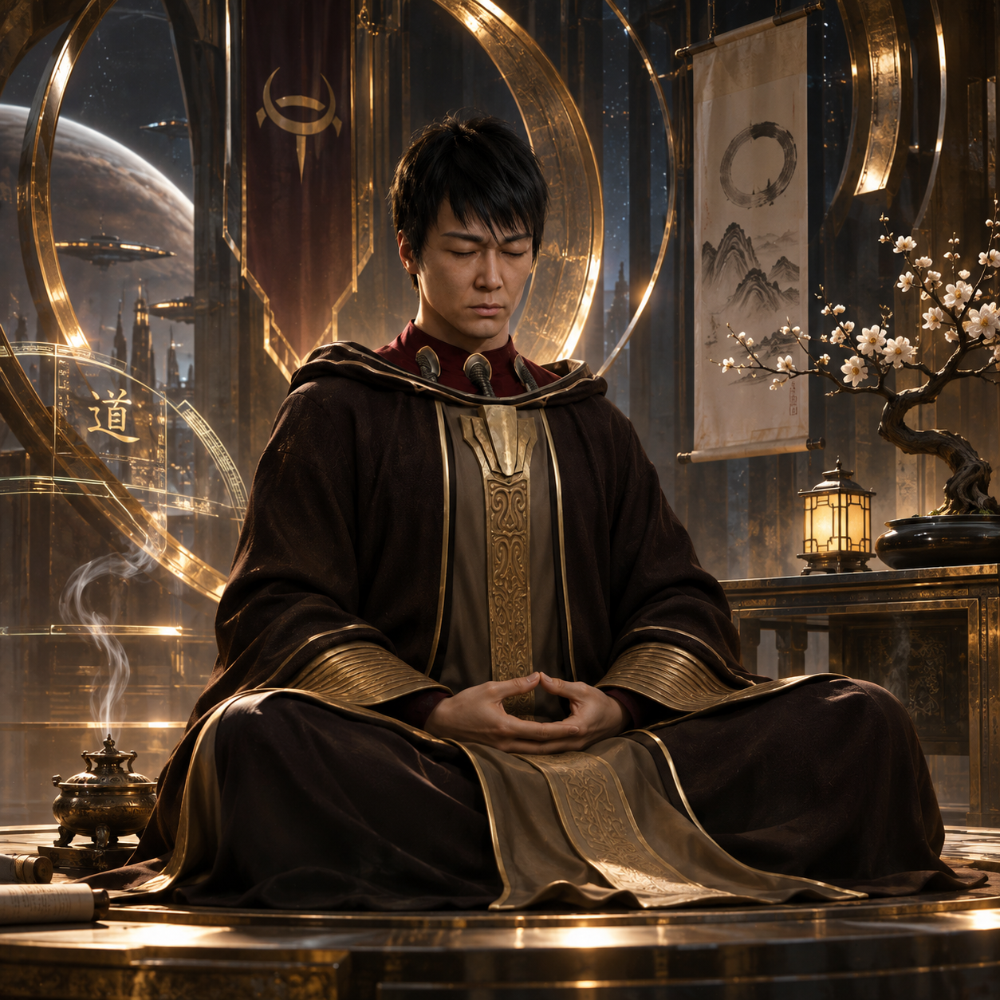
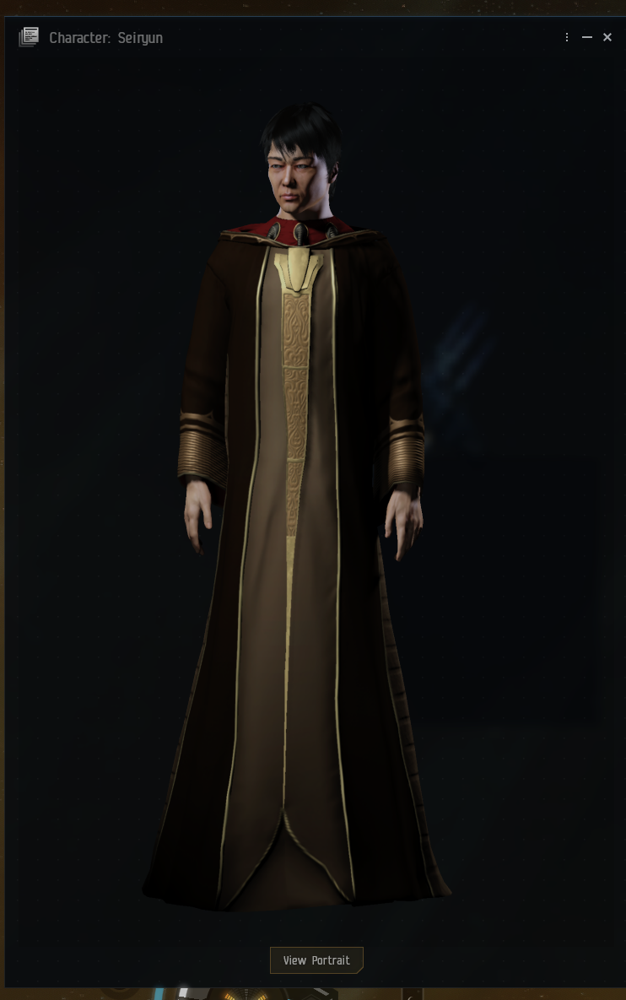

SEIRYUN
The Rogue Cultivator
His birth name is Jat Sing. His bestowed name is Seiryun. His path belongs to no throne.
A personal record of a capsuleer who studies the traditions of the Amarr Empire while following a path of cultivation beyond the boundaries of empire.
AchuraIndependentAmarr vessels
Biography
Born on Saisio III, among the secluded Achura, Jat Sing was raised in traditions of meditation and spiritual cultivation.
His early years were spent studying the nature of existence, mastering the self and seeking the hidden order behind the universe. His journey eventually led him beyond the Caldari State and into the Amarr Empire, where he encountered the teachings of the Imperial faith.
His discipline and unusual interpretation of the Scriptures attracted the attention of an Imperial spiritual authority, who bestowed upon him the name Seiryun. Jat Sing accepted the name as an honour, not as a bond of servitude.
He studies the Amarr doctrine, respects its traditions and finds profound meaning in its ancient teachings. Yet his understanding of the Way remains his own. Neither Imperial loyalist nor Caldari servant, he travels New Eden as a Rogue Capsuleer, commanding Amarr vessels and pursuing a path of cultivation beyond the boundaries of empire.
His birth name is Jat Sing. His bestowed name is Seiryun. His path belongs to no throne.
The Way
不争 · Bù zhēng — Not contending. Not making a contest of every encounter. Strength need not announce itself.
无为 · Wúwéi — Effortless action. Acting in accordance with the nature of things rather than forcing the world to follow one's will.
He does not reject the world's praise. He simply has no need of it.
Ships & records
Seiryun is drawn to Amarr vessels for their solemn architecture, gold-and-red visual language and disciplined use of energy weaponry. His admiration for their design does not make him an Imperial loyalist.
Saisio III
Jat Sing is raised among the Achura and traditions of meditation and cultivation.
A name bestowed
His studies bring him into contact with the Amarr faith. He receives the name Seiryun as an honour.
Rogue Capsuleer
He travels New Eden independently, studying the Amarr tradition and pursuing his own understanding of the Way.
The Stillness Beyond the Stars
A cinematic study of Seiryun in meditation. Video presented without audio.

